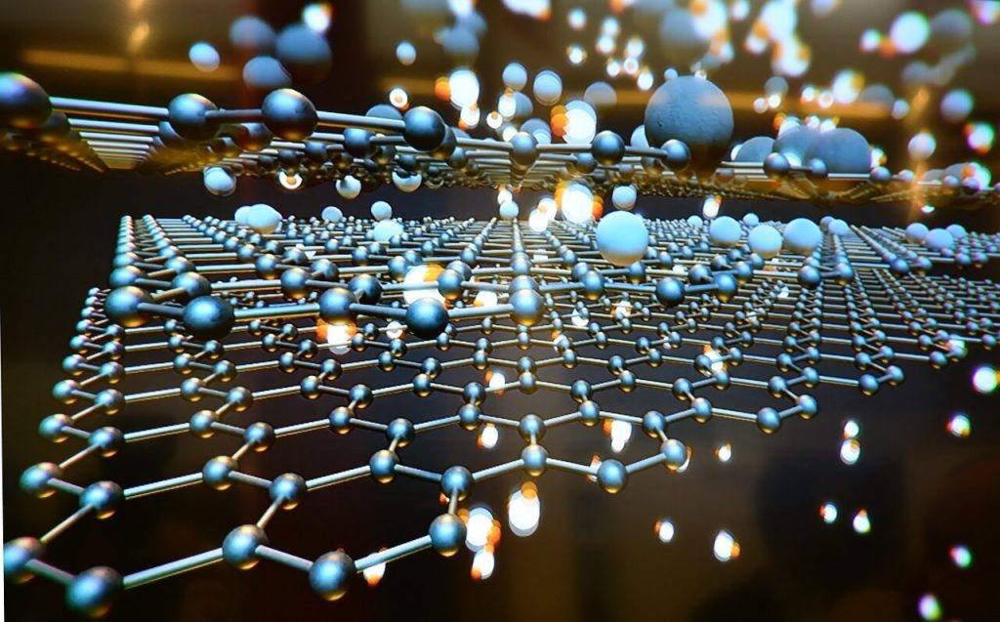

ဒါပေမယ့် ယခုအခါ ဂရပ်ဖင်းကို ဈေးသက်သက် သာသာနဲ့ ပေါပေါများများ ထုတ်လုပ်နိုင်မယ့် နည်းလမ်း အသစ်ကို တွေ့ရှိထားတယ်လို့ သိရပါတယ်။ ဒါထက် ပိုပြီး စိတ်ဝင်စား စရာ ကောင်းတဲ့ အချက်ကတော့ ဂရပ်ဖင်းကို အိမ်ထွက် စွန့်ပစ် ပစ္စည်း နဲ့ အမှိုက်တွေက နေတောင်မှ ထုတ်လုပ်လို့ ရနိုင်မယ် ဆိုတာပါပဲ။
အခု ဂရပ်ဖင်း ထုတ်လုပ်နည်း သစ်ကို Rice University (ရွိုက်စ် တက္ကသိုလ်) က သုတေသီ တွေက တီထွင် ဖန်တီး ခဲ့တာ ဖြစ်ပါတယ်။ ဒီနည်းနဲ့ ကာဗွန် ပါဝင်တဲ့ စွန့်ပစ် ပစ္စည်းတွေ ဖြစ်တဲ့ သီးနှံ တွေ၊ ပလပ်စတစ် ခွက်တွေ၊ အစားကျွင်း အစားကျန်တွေ ကနေ ဂရပ်ဖင်းကို ထုတ်ယူနိုင်မှာ ဖြစ်ပါတယ်။
Rice University ရဲ့ သတင်းထုတ်ပြန်ချက် မှာ “ကမ္ဘာပေါ်မှာ အစားအစာ တွေရဲ့ ၃၀ ကနေ ၄၀ ရာခိုင်နှုန်း လောက်ကို အမှိုက်အနေနဲ့ စွန့်ပစ်ကြပါတယ်။ နောက်ပြီး ပလပ်စတစ် စွန့်ပစ် ပစ္စည်း တွေဟာလဲ သဘာဝ ပတ်ဝန်းကျင် အတွက် ခေါင်းခဲစရာ ပြဿနာ ကြီး တစ်ခု ဖြစ်ပါတယ်။ ကျွန်တော်တို့ရဲ့ သုတေသန အရ ကာဗွန်ပါတဲ့ ဘယ်အရာဝတ္ထု ကိုမဆို ဂရပ်ဖင်း အဖြစ် ထုတ်လုပ်နိုင်ပါတယ်” လို့ ဆိုထားပါတယ်။

ဂရပ်ဖင်းမှာ ကာဗွန် အလွှာ တစ်ထပ်ပဲ ပါဝင်ပါတယ်။ ဒီ ကာဗွန် အက်တမ် တွေဟာ ၆ လုံး တစ်တွဲ ၆ မြှောင့်ပုံ အနေနဲ့ ဆက်ပြီး ဂရပ်ဖင်း အချပ်ကြီး ဖြစ်လာပါတယ်။ ဘာနဲ့ တူလဲ ဆိုတော့ ခြံစည်းရိုး ကာတဲ့ သံစကာ ကွက်တွေ လိုပေါ့။ ဒီလို ဖွဲ့စည်းပုံ ကြောင့်လဲ ကာဗွန် အဆက်တွေဟာ အလွန် ခိုင်မာပြီး အလွယ်တကူ မပြတ်တောက်နိုင်တာ ဖြစ်ပါတယ်။
ဂရပ်ဖင်းကို သူ့ချည်းပဲ အသုံးချနိုင် သလို အခြား အရာဝတ္ထု တွေနဲ့ ပေါင်းစပ်ပြီးလဲ အသုံးပြုနိုင်ပါတယ်။ ဒီလို အခြား အရာ ဝတ္ထုတွေနဲ့ ပေါင်းစပ် သုံးစွဲ ခြင်း အားဖြင့် ဒီ အရာဝတ္ထုတွေရဲ့ အလေးချိန်ကို ပိုမို ပေါ့ပါး စေသလို သူတို့ရဲ့ ခံနိုင်ရည်အား (strength) ကိုလဲ ပိုမို အားကောင်း လာစေပါတယ်။ ဒါ့ကြောင့် ဂရပ်ဖင်းကို ကွန်ကရစ် နဲ့ သတ္တုတွေနဲ့ ပေါင်းစပ် အသုံးပြု ပြီး အလေးချိန် လျော့ကျအောင် ပြုလုပ်ကြပါတယ်။
နောက်ပြီး သူ့ရဲ့ အပူနဲ့ လျပ်စစ် သယ်ဆောင်နိုင်တဲ့ စွမ်းဆောင်ရည် ကြောင့်လဲ စမတ်ဖုန်း တွေနဲ့ LED စကရင် တွေမှာ ထည့်သွင်း အသုံးပြုကြပါတယ်။ ဒါ့အပြင် စွမ်းအားမြှင့် ဘက်ထရီ တွေ ထုတ်လုပ်ရာ မှာလဲ အသုံးပြုကြပါတယ်။
စိန်ထက်မာတယ်ဆိုတဲ့ ဂရပ်ဖင်း ဆိုတာဘာလဲ
ဒီလို ဂရပ်ဖင်းကို အသုံးပြု နိုင်တဲ့ နည်းလမ်း အများအပြား ရှိပေမယ့် လက်တွေ့မှာတော့ တွင်တွင် ကျယ်ကျယ် သုံးစွဲခြင်း မရှိသေးပါဘူး။ အဓိက အဟန့်အတား ဖြစ်နေတာ ကတော့ ဂရပ်ဖင်း ရဲ့ မတန်တဆ ကြီးမားတဲ့ ဈေးနှုန်းပဲ ဖြစ်ပါတယ်။
လက်ရှိ အချိန်အထိ ဂရပ်ဖင်းကို အများအပြား ထုတ်လုပ်ဖို့ မလွယ် သေးပါဘူး။ ဒါ့ကြောင့်လဲဂရပ်ဖင်း ရဲ့ ဈေးကွက် ပေါက်ဈေးဟာ တစ်တန်ကို ဒေါ်လာ ၆၇,၀၀၀ ကနေ ၂၀၀,၀၀၀ လောက်ထိ ပေါက်ဈေး ရှိနေတာပါ။
ဂရပ်ဖင်း ထုတ်လုပ်ဖို့ အသုံးများတဲ့ နည်းလမ်းကတော့ ဂရပ်ဖိုက် အတုံးကနေ ဂရပ်ဖင်း တစ်ချပ်ချင်း စီကို အလွှာလိုက် ခွာယူတဲ့ နည်းလမ်း ဖြစ်ပါတယ်။
နောက်တနည်းကတော့ မိသိန်း ဓါတ်ငွေ့ကို ကြေးနီ အောက်ခံမှာ အငွေ့ပျံ သွားအောင် လုပ်တဲ့ နည်းလမ်း နဲ့ ထုတ်ယူတာ ဖြစ်ပါတယ်။ ဒီ နည်းလမ်း နှစ်ခု လုံးဟာ ထုတ်လုပ်ရ ခက်ခဲပြီး ကုန်ကျစားရိတ်လဲ အလွန် များပါတယ်။
ဆက်စပ် ဆောင်းပါး – Graphene နဲ့ စမ်းသပ် လမ်းခင်း
အခု Rice University က သုတေသီတွေ တီထွင်လိုက်တဲ့ နည်းလမ်းကို Flash Joule Heating နည်းပညာလို့ အမည်ပေးထားပါတယ်။ ဒီ နည်းက ပိုမို ရှင်းလင်း လွယ်ကူပြီး ကုန်ကျစားရိတ်လဲ အများကြီး သက်သာ သွားပါတယ်။
ဒီနည်းမှာ ပလတ်စတစ်၊ မီးသွေး၊ သစ်သား လို ကာဗွန် အခြေပြု ဒြပ်ပစ္စည်းကို အပူချိန် ၂,၇၆၀ C အပူချိန်မှာ ၁၀ မီလီ စက္ကန့် (၁ မီလီ စက္ကန့် = ၁/၁၀၀၀ စက္ကန့်) အပူ ပေးလိုက်ပါတယ်။
ဒီလို အပူပေးလိုက် တဲ့ အတွက် ကာဗွန် ဒြပ်ပစ္စည်း အတွင်းက ကာဗွန် အက်တမ်တွေ အချင်းချင်း ဆက်ထားတဲ့ အဆက်တွေ အကုန် ပြုတ်ထွက် ကုန်ပါတယ်။ ကာဗွန်က လွဲလို့ ကျန်တဲ့ အက်တမ်တွေဟာ ဓါတ်ငွေ့ အဖြစ် ပြောင်းသွားပြီး အငွေ့ပျံ သွားကြပါတယ်။
ကျန်ခဲ့တဲ့ ကာဗွန် အက်တမ်တွေကတော့ ဂရပ်ဖင်း အဖြစ် အချင်းချင်း ပြန်လည် ချိတ်ဆက် မိသွား ကြပါတယ်။
အခု နည်းလမ်း နဲ့ ရလာတဲ့ ဂရပ်ဖင်းရဲ့ နောက်ထူးခြားချက် တစ်ခုကတော့ ဂရပ်ဖင်း အချပ် တစ်ချပ်နဲ့ တစ်ချပ်အကြား ပူးကပ်မနေတာပဲ ဖြစ်ပါတယ်။ ပုံမှန် ဂရပ်ဖိုက်မှာ ရှိတဲ့ ဂရပ်ဖင်း အခြပ်တွေဟာ တစ်လွှာနဲ့ တစ်လွှာ ပူးနေတာမို့ အလွန် ခွာရ ခက်ပါတယ်။ အခု နည်းသစ်နဲ့ ထုတ်ထားတဲ့ ဂရပ်ဖင်း ကတော့ ပူးကပ် မနေတာမို့ အလွယ်တကူ ခွာလို့ ရပါတယ်။
အခုနည်းသစ်နဲ့ ထုတ်လုပ်ထားတဲ့ ဂရပ်ဖင်းကို ကွန်ကရစ် တုံးတွေ ထုတ်လုပ်တဲ့ နေရာမှာ ထည့်သွင်း စမ်းသပ်မယ်လို့ သိရပါတယ်။ ဒီနည်းနဲ့ ကွန်ကရစ် တုံးရဲ့ အလေးချိန်ကို လျှော့ချနိုင်မှာမို့ အဆောက်အဦတွေကို ပိုမို ပေါ့ပါးစွာ ဆောက်လုပ် နိုင်ကြမှာ ဖြစ်ပါတယ်။
နောက်အရေးပါတဲ့ အချက်ကတော့ ကမ္ဘာမြေ ပေါ်က ကာဗွန် အခြေပြု စွန့်ပစ် ပစ္စည်းတွေကို ပြန်လည် အသုံးချ recycle လုပ်နိုင်လာမှာပဲ ဖြစ်ပါတယ်။ နှစ်စဉ် တန်ချိန် များစွာ စွန့်ပစ်နေရတဲ့ ပလပ်စတစ် စွန့်ပစ် ပစ္စည်းတွကို ဂရပ်ဖင်း ထုတ်လုပ်ရေး အတွက် ပြန်လည် အသုံးချ နိုင်မယ်ဆို သဘာဝ ပတ်ဝန်းကျင် ပျက်စီးမှုကိုလဲ အတိုင်းအတာ တစ်ခုအထိ လျှော့ချ ပေးနိုင်မယ်လို့ ဆိုပါတယ်။
သုတေသီ တွေကတော့ အနာဂါတ်မှာ အဆောက်အဦတွေ ဆောက်လုပ်ရာမှာ ပိုမို ပေါ့ပါး ခိုင်ခန့် ပြီး သဘာဝ ပတ်ဝန်းကျင် အပေါ် ထိခိုက် ပျက်စီးမှု နည်းပါးတဲ့ ဂရပ်ဖင်း အခြေပြု ဆောက်လုပ်ရေး ကုန်ကြမ်းတွေ ကျယ်ကျယ် ပြန့်ပြန့် သုံးလာနိုင်မယ့် အနာဂါတ်ဟာ မဝေးတော့ဘူးလို့ ဆိုကြပါတယ်။
Reference: Graphene typically costs $200,000 per ton. Now, scientists can make it from trash | Big Think